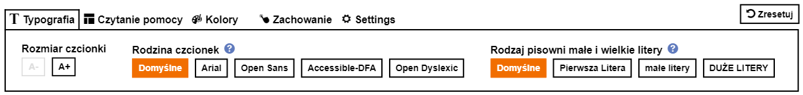
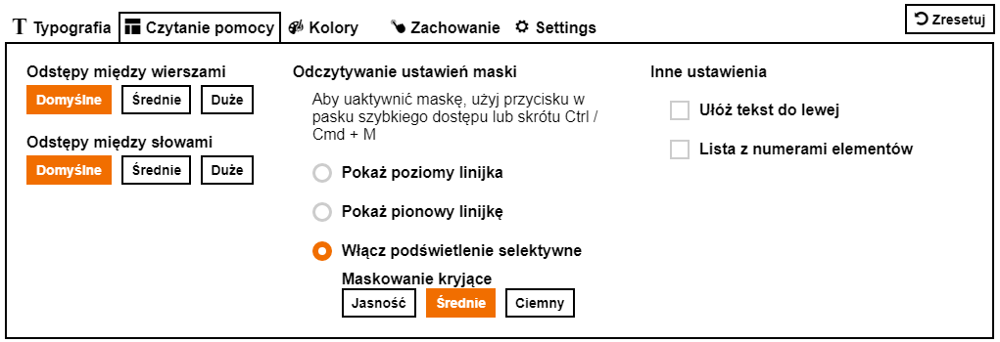
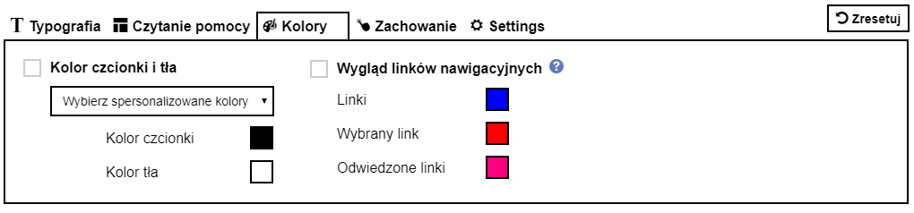
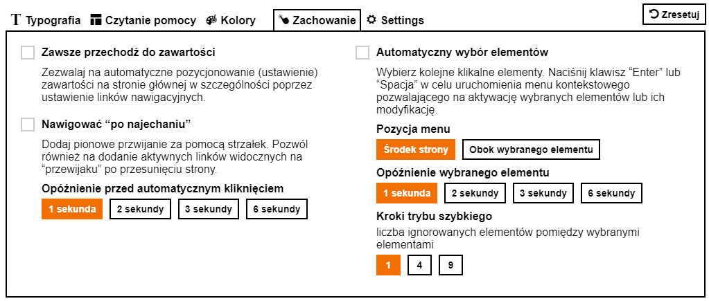

Usługa Orange Confort+
Usługa Orange Confort+
Orange Confort+ to rozwiązanie typu open source, mające na celu wyszczególnienie treści na stronach tak, aby były przyjazne osobom z niepełnosprawnościami.
Usługa zapewnia około dwudziestu usprawnień, aby dopasować się do Twoich potrzeb. Jeśli masz problemy ze wzrokiem,
kłopoty z rozpoznawaniem słów np. z powodu dysleksji, trudności z użyciem myszy lub ogólne problemy z użyciem
komputera, Orange Confort+ oferuje rozwiązanie; narzędzie wystarczy włączyć raz, a wszystkie strony internetowe
będą się dostosowywać pod Twoje preferencje.
Orange Confort+ to darmowa wtyczka do przeglądarek, dostępna dla Firefox, Google Chrome oraz Internet Explorer
11.
Dla kogo jest Orange Confort+?
Orange Confort+ to usługa zapewniająca pomoc użytkownikom z niepełnosprawnościami ruchowymi, wzrokowymi i intelektualnymi
(np. dysleksja), oferująca ułatwione korzystanie ze stron internetowych. Dzięki niej możliwe jest np. powiększenie
rozmiaru czcionki lub kontrastu danego koloru na danej stronie.
Usługa jest zaprojektowana z myślą o użytkowniku, a interfejs jest przejrzysty i prosty w użyciu.
Ustawienia zostały stworzone tak, aby spełniały potrzebny jak największej ilości użytkowników, bez wpływu na szybkość działania.
Przy projektowaniu usługi kluczowy był fakt, iż niemożliwym jest skategoryzowanie preferencji danego użytkownika dla danej strony internetowej, korzystając z powszechnie przyjętych wzorców. Dlatego też usługa oferuje elastyczność w personalizacji ustawień, aby umożliwić użytkownikowi wybór tego, co potrzebuje. Aby korzystanie z usługi było jak najprzyjemniejsze i jak najprostsze, Orange Confort+ zapewnia podgląd danych ustawień w czasie rzeczywistym. Dzięki temu, użytkownik może szybko znaleźć i wybrać optymalne ustawienia dla swoich potrzeb. Usługa jest dostępna w języku polskim, francuskim, angielskim oraz hiszpańskim. Domyślny język jest ustawiany domyślnie zgodnie z językiem odwiedzanej strony, jednak może być zmieniony. Usługa gwarantuje, że zawartość jak i wszystkie funkcje strony zostaną zachowane podczas korzystania.
Usługa jest zaprojektowana z myślą o użytkowniku, a interfejs jest przejrzysty i prosty w użyciu.
Ustawienia zostały stworzone tak, aby spełniały potrzebny jak największej ilości użytkowników, bez wpływu na szybkość działania.
Przy projektowaniu usługi kluczowy był fakt, iż niemożliwym jest skategoryzowanie preferencji danego użytkownika dla danej strony internetowej, korzystając z powszechnie przyjętych wzorców. Dlatego też usługa oferuje elastyczność w personalizacji ustawień, aby umożliwić użytkownikowi wybór tego, co potrzebuje. Aby korzystanie z usługi było jak najprzyjemniejsze i jak najprostsze, Orange Confort+ zapewnia podgląd danych ustawień w czasie rzeczywistym. Dzięki temu, użytkownik może szybko znaleźć i wybrać optymalne ustawienia dla swoich potrzeb. Usługa jest dostępna w języku polskim, francuskim, angielskim oraz hiszpańskim. Domyślny język jest ustawiany domyślnie zgodnie z językiem odwiedzanej strony, jednak może być zmieniony. Usługa gwarantuje, że zawartość jak i wszystkie funkcje strony zostaną zachowane podczas korzystania.
Ustawienia dostępne w usłudze
-
Typografia
Możliwość zmiany czcionek, ich rozmiaru, oraz odstępów między słowami. Funkcja przydatna dla użytkowników z dysleksją, problemami ze wzrokiem, lub po prostu dla tych, którym nie odpowiada dany układ graficzny strony. 
-
Układ
Zmiana układu i zasad wyświetlanego tekstu: mogą okazać się przydatne dla użytkowników z niepełnosprawnością wzrokową lub poznawczą, którzy mają problemy z rozpoznaniem poszczególnych treści na stronie, oraz dla użytkowników z niepełnosprawnością ruchową, którzy nie są w stanie użyć myszy, lub korzystają tylko z klawiatury. 
-
Kolory
Możliwość wyboru spersonalizowanej palety kolorów dla tekstu oraz tła. 
-
Zachowanie

Nawigacja myszą bez konieczności klikania
Funkcjonalność przydatna dla użytkowników, którzy nie są w stanie kliknąć myszą lub używać klawiatury. Po prawej stronie ekranu pojawiają się strzałki, i w zależności od pozycji kursora nad lub pod nimi, strona jest odpowiednio przewijania. Gdy kursor znajdzie się nad elemtentem który można kliknąć (np. link), jest on aktywowany po czasie wybranym przez użytkownika: 1 sek, 2 sek lub więcej.Automatyczny wybór elementów nawigacyjnych
Ta funkcja jest kluczowa dla użytkowników, którzy nie są w stanie użyć myszy i korzystają jedynie z klawiatury. Funkcja automatycznie skanuje całą stronę, aby znaleźć wszystkie elementy z możliwością wyboru, oraz formularze. Wciśnięcie spacji lub klawisza Enter otwiera menu kontekstowe, które pozwala na wybór następujących opcji: aktywację wybranego elementu, dalsze nawigowanie strony, przełączenie do trybu szybkiej nawigacji, lub nawigowanie z powrotem.
Orange Confort+ uses the Opendyslexic font
Orange Confort+ uses the Luciole font